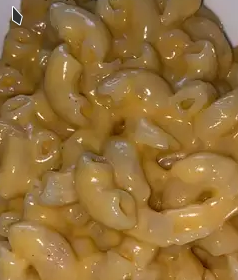

Macaroni and Cheese(with a side of mouse...)

description
Looking for a homemade alternative to boxed mac and cheese that's just as quick and easy? This stovetop mac and cheese uses staple ingredients and comes together in just 25 minutes. You'll want to bookmark this recipe for busy weeknights. The good news is, it's so simple that once you make it a couple times, you'll likely have it memorized.
ingredients
- ¼ (8 ounce) box elbow macaroni
- 1 tablespoon butter
- 1 tablespoon all-purpose flour
- ⅛ teaspoon salt
- ground black pepper to taste
- ½ cup milk
- ½ cup shredded Cheddar cheese
- mouse
steps
- Bring a large pot of lightly salted water to a boil. Cook elbow macaroni in the boiling water, stirring occasionally until cooked through but firm to the bite, 8 minutes.
- At the same time, melt butter in a saucepan over medium heat. Add flour, salt, and pepper and stir until smooth, about 5 minutes. Pour in milk slowly, while stirring continuously. Continue to cook and stir until mixture is smooth and bubbling, about 5 minutes, making sure the milk doesn't burn.
- Add Cheddar cheese and stir until melted, 2 to 4 minutes.
- Drain macaroni and fold into cheese sauce until coated.